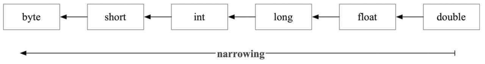

Copyright © 2015 Powered by MWeb, Theme used GitHub CSS.
针对微拍堂Android项目开发人员规范不统一，代码风格迥异的现象。为了有利于项目维护、增强代码可读性、提升 Code Review 效率以及规范团队安卓开发，故针对以下几个方面提出安卓开发规范：
代码规范的制定主要是为了让我们更好地进行团队协作和项目维护。所以对于代码规范的制定也应该围绕这两个目标进行。
特事特办：代码规范文档只能解决 99.99% 场景下的问题，特殊情况应该要特殊处理，违背者需要给出合理的解释，建议在代码中直接用注释注明，这样可以减少沟通成本，否则在一般情况下请务必遵守代码规范文档上的约束。
以人为本：我们应该衡量不同写法带来的优点和缺点，然后根据当前项目的实际需求做出合适的选择或者变化。规则是人定的，不是一成不变的。在制定新的规则或者修改旧的规则之前应当先参考谷歌或者阿里等知名公司的做法，然后与团队中的各个成员沟通和协商好。
实事求事：任何代码规范都应该追求在实际开发中发挥的作用或者效果，规则始终是规则，不能单纯为了制定规则而编写代码规范，而是更应该追求写法的实用性，实用性应该从代码理解的难易程度、代码可维护性、代码可复用性、代码可扩展性等方面因素综合考虑，其次是考虑代码的视觉美观性。
工欲善其事，必先利其器。
代码中的命名严禁使用拼音与英文混合的方式，更不允许直接使用中文的方式。正确的英文拼写和语法可以让阅读者易于理解，避免歧义。
注意：即使纯拼音命名方式也要避免采用。但 alibaba、taobao、youku、hangzhou 等国际通用的名称，可视同英文。
initXX：初始化相关方法，使用 init 为前缀标识，如初始化布局 initViewisXX：方法返回值为 boolean 型的请使用 is 或 check 为前缀标识getXX：返回某个值的方法，使用 get 为前缀标识，例如 getNamesetXX：设置某个属性值，使用 set 为前缀标识，例如 setNamehandleXX/processXX：对数据进行处理的方法，例如 handleMessagedisplayXX/showXX：弹出提示框和提示信息，例如 showDialogupdateXX：更新某个东西，例如 updateDatasaveXX：保存某个东西，例如 saveDataresetXX：重置某个东西，例如 resetDataclearXX：清除某个东西，例如 clearDataremoveXX：移除数据或者视图等，例如 removeViewdrawXX：绘制数据或效果相关的，使用 draw 前缀标识，例如 drawText| 名称 | 缩写 |
|---|---|
| Button | btn |
| CheckBox | cb |
| EditText | et |
| FrameLayout | fl |
| GridView | gv |
| ImageButton | ib |
| ImageView | iv |
| LinearLayout | ll |
| ProgressBar | pb |
| RadioButtion | rb |
| RecyclerView | rv |
| RelativeLayout | rl |
| ScrollView | sv |
| SeekBar | sb |
| Spinner | sp |
| TextView | tv |
| ToggleButton | tb |
| VideoView | vv |
| WebView | wb |
| 名称 | 缩写 |
|---|---|
| average | avg |
| background | bg（主要用于布局和子布局的背景） |
| buffer | buf |
| control | ctrl |
| current | cur |
| default | def |
| delete | del |
| document | doc |
| error | err |
| escape | esc |
| icon | ic（主要用在 App 的图标） |
| increment | inc |
| information | info |
| initial | init |
| image | img |
| length | len |
| library | lib |
| message | msg |
| password | pwd |
| position | pos |
| previous | pre |
| selector | sel（主要用于某一 view 多种状态） |
| server | srv |
| string | str |
| temporary | tmp |
| window | win |
“JVM的方法调用指令都以invoke开头，这5条指令如下所示。”
invokestatic：用于调用静态方法。invokespecial：用于调用私有实例方法、构造器方法以及使用super关键字调用父类的实例方法等。invokevirtual：用于调用非私有实例方法。invokeinterface：用于调用接口方法。invokedynamic：用于调用动态方法。”invokestatic用来调用静态方法，也就是使用static关键字修饰的方法。它要调用的方法在编译期间确定，且运行期不会修改，属于静态绑定。调用invokestatic不需要将对象加载到操作数栈，只需要将所需要的参数入栈就可以执行invokestatic指令了。例如Integer.valueOf（"42"）对应字节码如下所示。
0: ldc #2 // String 42
2: invokestatic #3 // Method
java/lang/Integer.valueOf:(Ljava/lang/String;)
Ljava/lang/Integer;
invokevirtual指令用于调用普通实例方法，它调用的目标方法在运行时才能根据对象实际的类型确定，在编译期无法知道，类似于C++中的虚方法。
在调用invokevirtual指令之前，需要将对象引用、方法参数入栈，调用结束对象引用、方法参数都会出栈，如果方法有返回值，返回值会入栈到栈顶。比如file.toString()对应的字节码如下所示。
10: aload_1
11: invokevirtual #5 // Method java/io/File.toString:()Ljava/lang/String;
下面以一个实际的例子来讲解invokevirtual指令的用法，如代码清单3-1所示.
package invoketest;
class Color {
public void printColorName() {
System.out.println("Color name from parent");
}
}
class Red extends Color {
@Override
public void printColorName() {
System.out.println("Color name is Red");
}
}
class Yellow extends Color {
@Override
public void printColorName() {
System.out.println("Color name is Yellow");
}
}
public class InvokeVirtualTest {
public static void main(String[] args) {
Color yellowColor = new Yellow();
Color redColor = new Red();
printColorName(yellowColor);
printColorName(redColor);
}
public static void foo(Color color) {
color.printColorName();
}
}
foo方法的字节码如下所示。
0: aload_0
1: invokevirtual #7 // Method invoketest/Color.printColorName:()V
4: return
foo方法使用invokevirtual指令调用Color类的printColorName方法，但它们最终调用的目标方法却不同，可能是Yellow类的printColorName方法，也有可能是Red类的printColorName方法。invokevirtual根据对象的实际类型进行分派（虚方法分派），在运行时动态选择执行具体子类的实现方法。
invokespecial，顾名思义，它用来调用“特殊”的实例方法，包括如下三种：
<init>；比如new File（"test.txt"）对应的字节码如下所示，invokespecial用来调用File类的构造器方法<init>。
0: new #2 // class java/io/File
3: dup
4: ldc #3 // String test.txt
6: invokespecial #4 // Method java/io/File."<init>":(Ljava/lang/String;)V
看到这里细心的读者可能会想为什么有了invokevirtual指令还需要invokespecial指令呢？这是出于效率的考虑，invokespecial调用的方法可以在编译期间确定，在JDK 1.0.2之前，invokespecial指令曾被命名为invokenonvirtual，以区别于invokevirtual。例如private方法不会因为继承被子类覆写，在编译期间就可以确定，所以private方法的调用使用invokespecial指令。
invokeinterface用于调用接口方法，同invokevirtual一样，也是需要在运行时根据对象的类型确定目标方法，以下面的代码为例。
private AutoCloseable autoCloseable;
public void foo() throws Exception {
autoCloseable.close();
}
foo方法对应的字节码如下所示。
0: aload_0
1: getfield #2 // Field autoCloseable:Ljava/lang/AutoCloseable;
4: invokeinterface #3, 1 // InterfaceMethod java/lang/AutoCloseable.close:()V
Java虚拟机的指令集从1.0开始到JDK7之间的十余年间没有新增任何指令，这期间基于JVM的语言百花齐放，出现了JRuby、Groovy、Scala等很多运行在JVM的语言。因为JVM有诸多的限制，大部分情况下这些非Java的语言需要很多额外的调教才能在JVM上高效运行。随着JDK7的发布，字节码指令集新增了一个重量级指令invokedynamic，这个指令为多语言在JVM上的实现提供了技术支撑。
开始讲解invokedynamic之前需要先介绍一个核心的概念方法句柄（MethodHandle）。MethodHandle又称为方法句柄或方法指针，是java.lang.invoke包中的一个类，它的出现使得Java可以像其他语言一样把函数当作参数进行传递。MethodHandle类似于反射中的Method类，但它比Method类要更加灵活和轻量级。下面以一个实际的例子来看MethodHandle的用法，如下所示。
public class Foo {
public void print(String s) {
System.out.println("hello, " + s);
}
public static void main(String[] args) throws Throwable {
Foo foo = new Foo();
MethodType methodType = MethodType.methodType(void.class, String.class);
MethodHandle methodHandle = MethodHandles.lookup().findVirtual(Foo.class, "print", methodType);
methodHandle.invokeExact(foo, "world");
}
}
前面介绍的4条invoke*指令的方法分派规则固化在虚拟机中，invokedynamic则把如何查找目标方法的决定权从虚拟机下放到具体的用户代码中。
invokedynamic指令的调用流程如下。

invokedynamic指令并不是只能用在动态语言上，它是一种方法动态分派的方式，除了用于动态语言还有很多其他用途，比如Lambda表达式。
LambdaMetafactory.metafactory方法动态生成内部类。invokedynamic与之前四个invoke指令最大的不同就在于它把方法分派的逻辑从虚拟机层面下放到程序语言。
Lambda表达式采用的方式并不是在编译期间生成匿名内部类，而是提供一个稳定的字节码二进制表示规范，对用户而言看到的只有invokedynamic这样一个非常简单的指令。用invokedynamic来实现把方法翻译的逻辑隐藏在JDK的实现中，后续想替换实现方式非常简单，只用修改LambdaMetafactory.metafactory里面的逻辑就可以了。这种方法把Lambda翻译的策略由编译期间推迟到运行时。
加载（load） 和 存储（store） 相关的指令是使用得最频繁的指令，分为load类、store类、常量加载这三种。
const类、push类、ldc类。const、push类指令是将常量值直接加载到操作数栈顶，比如iconst_0是将整数0加载到操作数栈上，bipush 100是将int型常量100加载到操作数栈上。ldc指令是从常量池加载对应的常量到操作数栈顶，比如ldc #10是将常量池中下标为10的常量数据加载到操作数栈上。为什么同是int型常量，加载需要分这么多类型呢？这是为了使字节码更加紧凑，int型常量值根据值 n 的范围，使用的指令按照如下的规则。

字节码指令的别名很多是使用简写的方式，比如ldc是load constant的简写，bipush对应byte immediate push, sipush对应short immediate push。
常见的操作数栈指令有pop、dup和swap。
pop指令用于将栈顶的值出栈，一个常见的场景是调用了有返回值的方法，但是没有使用这个返回值，比如下面的代码。
public String foo() {
return "";
}
public void bar() {
foo();
}
对应字节码如下所示。
0: aload_0
1: invokevirtual #13 // Method foo:()Ljava/lang/String;
4: pop
5: return
第4行有一个pop指令用于弹出调用bar方法的返回值。
dup指令用来复制栈顶的元素并压入栈顶，创建对象的时候会用到dup指令。
swap用于交换栈顶的两个元素，如图2-8所示。

还有几个稍微复杂一点的栈操作指令：dup_x1、dup2_x1和dup2_x2。下面以dup_x1为例来讲解。dup_x1是复制操作数栈栈顶的值，并插入栈顶以下2个值，看起来很绕，把它拆开来看其实分为了五步，如图2-9所示。
v1 = stack.pop(); // 弹出栈顶的元素，记为v1
v2 = stack.pop(); // 再次弹出栈顶的元素，记为v2
state.push(v1); // 将v1 入栈
state.push(v2); // 将v2 入栈
state.push(v1); // 再次将v1 入栈
接下来看一个dup_x1指令的实际例子，代码如下。
public class Hello {
private int id;
public int incAndGetId() {
return ++id;
}
}
incAndGetId方法对应的字节码如下。
public int incAndGetId();
0: aload_0
1: dup
2: getfield #2 // Field id:I
5: iconst_1
6: iadd
7: dup_x1
8: putfield #2 // Field id:I
11: ireturn
假如id的初始值为42，调用incAndGetId方法执行过程中操作数栈的变化如图2-10所示。

aload_0将this加载到操作数栈上。dup指令将复制栈顶的this，现在操作数栈上有两个this，栈上的元素是[this, this]。getfield #2指令将42加载到栈上，同时将一个this出栈，栈上的元素变为[this, 42]。第5行：iconst_1将常量1加载到栈上，栈中元素变为[this, 42, 1]。iadd将栈顶的两个值出栈相加，并将结果43放回栈上，现在栈中的元素是[this, 43]。dup_x1将栈顶的元素43插入this之下，栈中元素变为 [43, this, 43]。putfield #2将栈顶的两个元素this和43出栈，现在栈中元素只剩下栈顶的[43]，ireturn指令将栈顶的43出栈返回。完整的操作数栈指令介绍如表2-3所示。

Java中有加减乘除等相关的语法，针对字节码也有对应的运算指令，如表2-4所示。

如果需要进行运算的数据类型不一样，会涉及类型转换（cast），比如下面的浮点数1 .0与整数1相加的运算。
1.0 + 1
按照直观的想法，加法操作对应的字节码指令如下所示。
fconst_1 // 将 1.0 入栈
iconst_1 // 将 1 入栈
fadd
但fadd指令值只支持对两个float类型的数据做相加操作，为了支持这种运算，JVM会先把两个数据类型转换为一样，但精度可能出问题。为了能将1.0和1相加，int型数据需要转为float型数据，然后调用fadd指令进行相加，如下面的代码所示。
fconst_1 // 将 1.0 入栈
iconst_1 // 将 1 入栈
i2f // 将栈顶的 1 的int转为float
fadd // 两个float值相加
虽然在Java语言层面，boolean、char、byte、short是不同的数据类型，但是在JVM层面它们都被当作int来处理，不需要显式转为int，字节码指令上也没有对应转换的指令。
有多种类型数据混合运算时，系统会自动将数据转为范围更大的数据类型，这种转换被称为宽化类型转换（widening）或自动类型转换，如图2-11所示。

自动类型转换并不意味着不丢失精度，比如下面代码中将int值“123456789”转为float就出现了精度丢失的情况。
int n = 123456789;
float f = n; // f = 1.23456792E8
相对的，如果把大范围数据类型的数据强制转换为小范围数据类型，这种转换称为窄化类型转换（narrowing），比如把long转为int, double转为float，如图2-12所示。

可想而知，这种强制类型转换的数值如果超过了目标类型的表示范围，可能会截断成完全不同的数值，比如300（byte）等于44。数值类型转换指令的完整列表如表2-5所示。
控制转移指令用于有条件和无条件的分支跳转，常见的if-then-else、三目表达式、for循环、异常处理等都属于这个范畴。对应的指令集包括：
以下面代码中的isPositive方法为例，它的作用是判断一个整数是否为正数。
public int isPositive(int n) {
if (n > 0) {
return 1;
} else {
return 0;
}
}
对应的字节码如下所示。
0: iload_1
1: ifle 6
4: iconst_1
5: ireturn
6: iconst_0
7: ireturn
根据我们之前的分析，isPositive方法局部变量表的大小为2，第一个元素是this，第二个元素是参数n，接下来逐行解释上面的字节码。
iload_1的作用是将局部变量表中下标为1的整型变量加载到操作数栈上，也就是加载参数n。其中iload_1中的i表示要加载的变量是一个int类型。同时注意到iload_1后面跟了一个数字1，它们的作用都是把栈顶元素存入局部变量表的下标为1的位置，它属于iload_＜i>指令组，其中i只能是0、1、2、3。其实把iload_1写成iload 1也能获取正确的结果，但是编译的字节码会变长，在字节码执行时也需要获取和解析1这个额外的操作数。ifle指令的作用是将操作数栈顶元素出栈跟0进行比较，如果小于等于0则跳转到特定的字节码处，如果大于0则继续执行接下来的字节码。ifle可以看作“ifless or equal”的缩写，比较的值是0。如果想要比较的值不是0，需要用新的指令if_icmple表示“if int compare less or equal xx”。假设 n 等于20，调用isPositive方法操作数栈的变化情况如图2-13所示。

控制转移指令完整的列表如表2-6所示。
纵观所有的字节码指令，并没有与for名字相关的指令，那for循环是如何实现的呢？接下来以sum相加求和的例子来看for循环的实现细节，代码如下所示。
public int sum(int[] numbers) {
int sum = 0;
for (int number : numbers) {
sum += number;
}
return sum;
}
上面代码对应的字节码如下。
0: iconst_0
1: istore_2
2: aload_1
3: astore_3
4: aload_3
5: arraylength
6: istore 4
8: iconst_0
9: istore 5
11: iload 5
13: iload 4
15: if_icmpge 35
18: aload_3
19: iload 5
21: iaload
22: istore 6
24: iload_2
25: iload 6
27: iadd
28: istore_2
29: iinc 5, 1
32: goto 11
35: iload_2
36: ireturn
为了方便理解，这里先把对应的局部变量表的示意图画出来，如图2-14所示。

第2～9行用来初始化循环控制变量，其伪代码如下所示。
$array = numbers;
$len = $array.arraylength
$i = 0
aload_1指令的作用是加载局部变量表中下标为1的变量（参数numbers）, astore_3指令的作用是将栈顶元素存储到局部变量下标为3的位置上，记为 $array，如图2-16所示。
$array到栈顶，调用arraylength指令获取数组长度存储到栈顶，随后调用istore 4将数组长度存储到局部变量表的第4个位置，这个变量是表示数组的长度值，记为 $len，过程如图2-17所示。11～32行是真正的循环体
11: iload 5
13: iload 4
15: if_icmpge 35
$i和 $len到栈顶，然后调用if_icmpge进行比较，如果 $i >= $len，直接跳转到第35行指令处，for循环结束；如果$i ＜$len则继续往下执行循环体，可以用如下伪代码表示。
if ($i >= $len) goto 35;
$array[$i]赋值给number。aload_3加载 $array到栈上，iload 5加载 $i到栈上，然后iaload指令把下标为 $i的数组元素加载到操作数栈上，随后istore 6将栈顶元素存储到局部变量表下标为6的位置上，过程如图2-20所示。iload_2和iload 6指令把sum和number值加载到操作数栈上，然后执行iadd指令进行整数相加，过程如图2-21所示。

@start: if ($i >= $len) return;
$item = $array[$i];
sum += $item;
++ $i
goto @start
int sum = 0;
for (int i = 0; i < numbers.length; i++) {
sum += numbers[i];
}
return sum;
字节码是运行在JVM上的，为了能弄懂字节码，需要对JVM的运行原理有所了解。
虚拟机常见的实现方式有两种：基于栈（Stack based）和基于寄存器（Registerbased）。典型的基于栈的虚拟机有Hotspot JVM、.net CLR，而典型的基于寄存器的虚拟机有Lua语言虚拟机LuaVM和Google开发的Android虚拟机DalvikVM。
两者有什么不同呢？举一个计算两数相加的例子：c = a + b, Java源码如下所示。
int my_add(int a, int b) {
return a + b;
}
使用javap查看对应的字节，如下所示。
0: iload_1 // 将a压入操作数栈
1: iload_2 // 将b压入操作数栈
2: iadd // 将栈顶两个值出栈相加，然后将结果放回栈顶
3: ireturn // 将栈顶值返回
实现相同功能对应的lua代码如下。
local function my_add(a, b)
return a + b;
end
使用luac -l -l -v -s test.lua命令查看lua的字节码，如下所示。
[1] ADD R2 R0 R1 ; R2 := R0 + R1
[2] RETURN R2 2 ; return R2
[3] RETURN R0 1 ; return
第1行调用ADD指令将R0寄存器和R1寄存器中的值相加存储到寄存器R2中。第2行返回R2寄存器的值。第3行是lua的一个特殊处理，为了防止有分支漏掉了return语句，lua始终在最后插入一行return语句。
以7 + 20为例，基于栈和基于寄存器的执行过程对比如图2-1所示。

基于栈和基于寄存器的指令集架构各有优缺点，具体如下所示。
在写递归的程序时如果忘记写递归退出的条件，则会报java.lang.StackOverflowError异常。比如计算斐波拉契数列，它的计算公式为f（n）= f（n-1）+ f（n-2），假设从0开始，它的序列如下所示。
0, 1, 1, 2, 3, 5, 8, 13, 21, ...
在没有递归退出条件的情况下，很容易写出下面的代码。
public static int fibonacci(int n) {
return fibonacci(n -1) + fibonacci(n -2);
}
运行上面的代码马上会报java.lang.StackOverflowError异常。为什么会抛这个异常呢？这就要从栈帧（Stack Frame）讲起。
Hotspot JVM是一个基于栈的虚拟机，每个线程都有一个虚拟机栈用来存储栈帧，每次方法调用都伴随着栈帧的创建、销毁。Java虚拟机栈的释义如图2-2所示。

当线程请求分配的栈容量超过Java虚拟机栈允许的最大容量时，Java虚拟机将会抛出StackOverflowError异常，可以用JVM命令行参数 -Xss来指定线程栈的大小，比如 -Xss:256k用于将栈的大小设置为256KB。
每个线程都拥有自己的Java虚拟机栈，一个多线程的应用会拥有多个Java虚拟机栈，每个栈拥有自己的栈帧，如图2-3所示。

栈帧是用于支持虚拟机进行方法调用和方法执行的数据结构，随着方法调用而创建，随着方法结束而销毁。栈帧的存储空间分配在Java虚拟机栈中，每个栈帧拥有自己的局部变量表（Local Variable）、操作数栈（Operand Stack）和指向常量池的引用，如图2-4所示。
栈帧是用于支持虚拟机进行方法调用和方法执行的数据结构，随着方法调用而创建，随着方法结束而销毁。栈帧的存储空间分配在Java虚拟机栈中，每个栈帧拥有自己的局部变量表（Local Variable）、操作数栈（Operand Stack）和指向常量池的引用，如图2-4所示。

每个栈帧内部都包含一组称为局部变量表的变量列表，局部变量表的大小在编译期间就已经确定，对应class文件中方法Code属性的max_locals字段，Java虚拟机会根据max_locals字段来分配方法执行过程中需要分配的最大的局部变量表容量。代码示例如下。
public class MyJVMTest {
public void foo(int id, String name) {
String tmp = "A";
}
}
使用javac -g MyJVMTest.java进行编译，然后执行javap -c -v -l MyJVMTest查看字节码，结果如下。
public void foo(int, java.lang.String);
Code:
stack=1, locals=4, args_size=3
0: ldc #2 // String A
2: astore_3
3: return
LocalVariableTable:
Start Length Slot Name Signature
0 4 0 this LMyJVMTest;
0 4 1 id I
0 4 2 name Ljava/lang/String;
3 1 3 tmp Ljava/lang/String;
可以看到foo方法只有两个参数，args_size却等于3。当一个实例方法（非静态方法）被调用时，第0个局部变量是调用这个实例方法的对象的引用，也就是我们所说的this。调用方法foo（2019, "hello"）实际上是调用foo（this, 2019,"hello"）。LocalVariableTable输出显示了局部变量表的4个槽（slot），布局如表2-1所示。

javap输出中的locals=4表示局部变量表的大小等于4。局部变量表的大小并不是方法中所有局部变量的数量之和，它与变量的类型和变量作用域有关。当一个局部作用域结束，它内部的局部变量占用的位置就可以被接下来的局部变量复用了，以下面的静态foo方法为例。
public static void foo() {
// locals=0, max_locals=0
if (true) {
// locals=1, max_locals=1
String a = "a";
}
// locals=0, max_locals=1
if (true) {
// locals=1, max_locals=1
String b = "b";
}
// locals=0, max_locals=1
}
foo方法对应的局部变量表的大小等于1，因为是静态方法，局部变量表不用自动添加this为局部变量表的第一个元素，a和b共用同一个slot等于0的局部变量表位置。当包含long和double类型的变量时，这些变量会占用两个局部变量表的slot，以下面的代码为例
public void foo() {
double a = 1L;
int b = 10;
}
对应的局部变量表如图2-5所示。

每个栈帧内部都包含一个称为操作数栈的后进先出（LIFO）栈，栈的大小同样也是在编译期间确定。Java虚拟机提供的很多字节码指令用于从局部变量表或者对象实例的字段中复制常量或者变量到操作数栈，也有一些指令用于从操作数栈取走数据、操作数据和把操作结果重新入栈。在方法调用时，操作数栈也用于准备调用方法的参数和接收方法返回的结果。
比如iadd指令用于将两个int型的数值相加，它要求执行之前操作数栈已经存在两个int型数值，在iadd指令执行时，两个int型数值从操作数栈中出栈，相加求和，然后将求和的结果重新入栈。1 + 2对应的指令执行过程，如图2-6所示。

整个JVM指令执行的过程就是局部变量表与操作数栈之间不断加载、存储的过程，如图2-7所示。

那么，如何计算操作数栈的最大值？操作数栈容量最大值对应方法Code属性的max_stack，表示当前方法的操作数栈在执行过程中任何时间点的最大深度。调用一个成员方法会将this和所有参数入栈，调用完毕this和参数都会出栈。如果方法有返回值，会将返回值入栈。代码示例如下。
public void foo() {
bar(1, 1, 2);
}
public void bar(int a, int b, int c) {
}
foo方法的max_stack等于4，因为调用bar方法会将this、1、1、2这四个变量压栈到栈上，栈的深度为4，调用完后全部出栈。
如果bar方法后面再调用一个参数个数小于3的方法，比如下面代码中的bar1, foo方法的max_stack还是等于4，因为方法调用过程中，操作数栈的最大深度还是调用bar方法产生的。
public void foo() {
// stack=4, max_stack=4
bar(1, 1, 2);
// stack=2, max_stack=4
bar1(1);
}
public void bar(int a, int b, int c) {
}
public void bar1(int a) {
}
如果bar方法后面再调用一个参数个数大于3的方法，比如下面代码中的bar2，会将this、1、2、3、4、5入栈，max_stack变为6。
public void foo() {
// stack=4, max_stack=4
bar(1, 1, 2);
// stack=2, max_stack=4
bar1(1);
// stack=6, max_stack=6
bar2(1, 2, 3, 4, 5);
}
public void bar(int a, int b, int c) {
}
public void bar1(int a) {
}
public void bar2(int a, int b, int c , int d, int e) {
}
计算stack的方式如下：遇到入栈的字节码指令，stack+=1或者stack+=2（根据不同的指令类型），遇到出栈的字节码指令，stack则相应减少，这个过程中stack的最大值就是max_stack，也就是javap输出的stack的值，计算过程的伪代码如下所示。
push(Type t) {
stack = stack + width(t);
if (stack > max_stack) max_stack = stack;
}
pop(Type t) {
stack = stack - width(t);
}
Copyright © 2015 Powered by MWeb, Theme used GitHub CSS.